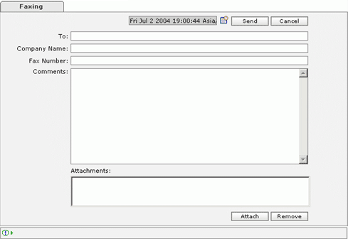

| Faxing |
| How to create fax job? |
|
 |
Create Fax |
| General Fax Information: |
| Name | Min Length | Max Length | Description | Required /Optional |
|---|---|---|---|---|
| Date | - | - | Select the date and time when the mail has to be delivered. | Required |
| To: | - | - | Information of the person receiving the fax. | Required |
| Company Name: | - | - | Name of the company where the fax has to be received. | Optional |
| Fax Number: | - | - | Fax Number to which the fax has to be delivered. | Required |
| Attachments: | - | - | A list of all the attachments. | Required |
| 'Attach' button | - | - |
|
|
| 'Remove' button | - | - | Press 'Remove' to remove the selected file(s) from the 'Attachments' list box. | |
| 'Send' button | - | - | Press 'Send' to dispatch the fax job to the scheduler. | |
| 'Cancel' button | - | - | Press 'Cancel' to abort sending fax. |